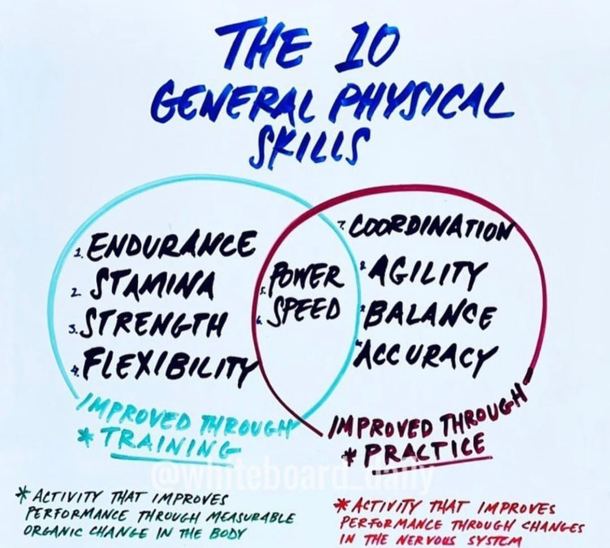

Foundation


- CrossFit SixtyFive100
- Vad är CrossFit?
- CrossFit ordlista?
- CrossFit övningar?
Vem är CrossFit SixtyFive100?
Under hösten 2014 satte vi oss ner och började fundera över tränings möjligheterna i Vasa, framförallt inom CrossFit. Redan under den tiden utövade vi alla tre CrossFit liknande träning men saknade den äkta känslan och attityden samt en fysisk plats där gemenskapen mellan medlemmarna var stark.
I februari 2015 öppnade vi därför dörrarna till den första licenserade CrossFit boxen i Vasa. Vi har sedan dess haft otaligt härliga träningstimmar och en orubblig gemenskap. I vårt gäng är du alltid välkommen oavsätt vem du är, gammal som ung, nybörjare eller erfaren.
Kvalitet
Allt vi gör gällande träning, service och utrymme uppfyller alla de krav för en licenserad CrossFit box och håller en hög standard. Våra coacher är välutbildade för att våra medlemmar skall få bästa möjliga träning.
Glädje
För att man skall trivas och utvecklas på bästa sätt behöver man även ha roligt när man tränar. Vi strävar efter att våra medlemmar alltid skall ha ett leende på läpparna när de lämnar boxen.
Gemenskap
Vi värdesätter en bra gemenskap väldigt högt samt känslan av att man hör hemma hos oss. Vi vill fungera som ett andra hem för våra medlemmar, där man tränar, stöttar varandra och har roligt tillsammans.
Vad är CrossFit?
CrossFit är ett styrke- och konditionsprogam baserat på konstant varierande rörelser som utförs under hög intensitet.
Vi människor står, sitter, kastar, hoppar, lyfter, klättrar och springer och alla dessa är naturliga rörelser för oss. Vi har gjort detta sen urminnestider och det är en del av vår design. Dessa naturliga och funktionella rörelser utgör basen i en CrossFit träning. Variationen i rörelserna är viktig. Träningen varieras med tiden och olika rörelser; tunga lyft, lätta lyft, rörelser med kroppsvikt, många repetitioner, få repetitioner, löpning, rodd, hopp osv.
Den konstanta variationen gör träningen väldigt effektiv och rolig. En central del av CrossFit är det att rörelserna görs mot tiden. Det finns ofta två sätt att utföra rörelserna; antingen ett visst antal repetitioner av rörelsen görs så snabbt som möjligt eller så många rundor som möjligt av några rörelser på en viss tid. Detta betyder att du alltid kan mäta dina framsteg.
CrossFit får influenser från ett brett område som till exempel gymnastik, konditionsträning, tyngdlyftning och styrkelyft. Detta är en av orsakerna till att du får en otrolig mångsidig fysik då du tränar CrossFit.
Det speciella med CrossFit är just att inte specialisera på nånting. Vi vill utveckla människans alla fysiska egenskaper. Dessa är:
Kardiovaskulär och respiratorisk uthållighet, Ihärdighet, Styrka, Flexibilitet, Effektivitet, Snabbhet, Koordination, Rörlighet, Balans, Precision
Finlands första CrossFit®-box grundades 2007 och i dagens läge finns det mer än 70 CrossFit®-boxar i Finland. Alla officiella boxar i Finland uppfyller CrossFit Inc’s krav för att ha det officiella statuset CrossFit box. Dessa krav säkerställer att CrossFit boxen är en representant för CrossFit Inc’s sanna natur och värderingar.

CrossFit ordlista:
Box = CrossFit gym
WOD = Workout Of the Day
Metcon = Metabolic conditioning workout, samma betydelse som WOD.
AMRAP = As Many Rounds/Reps As Possible
OTM = On The Minute
EMOM = Every Minute On the Minute
RFT = Rounds For Time
Reps = Repetitioner
RX = När ett pass utförs som ordinerat.
Scaled/Skala = Man skalar en övning, dvs gör den lättare genom att sänka vikterna eller göra en övning lättare.
Kipping/Kippa = Göra en övning lättare genom att ta hjälp av höfterna. Man kan Kippa övningar som pull ups och muscle ups. Motsatsen ett strikt utförande av övningarna.
UB = Unbroken. När en övning alla repetitioner görs på en och samma gång.
C2B = Chest to bar
T2B = Toes to bar
MU = Muscle up
HSPU = Handstand Push Up
DU = Double Unders
OHS = Overhead Squat
OH = Overhead
SDHP = Sumo Deadlift High Pull
DL = Deadlift
PR = Personligt Rekord
Benchmark = En WOD eller ett lyft man gör vid flera tillfällen för att se hur ens träning utvecklats.
BW = Body Weight
DB = Dumbbell
KB = Kettlebell
GHD = Glute Ham Developer. Ställning för att träna hela bålen.
STOH = Shoulder To Overhead
GTOH = Ground To Overhead
RM = Repetition Maximum. Max antal repetitioner man orkar lyfta under ett försök, ex 1RM.
Tabata = En form av intervall träning. Man jobbar 20 sek och vilar 10 sek under 8 rundor.
TNG = Touch And Go. När en övning görs utan stopp mellan repetitionerna.
CrossFit övningar:
Bodyweight movements:
Air SquatPush-Up
Hollow and Arch
Strict Pull-Up
Kip Swing
Handstand
Barbell movements:
Shoulder PressFront Squat
Backsquat
Overhead Squat
Deadlift
Olympic lifts:
Push PressPush Jerk
Power Clean
Power Snatch